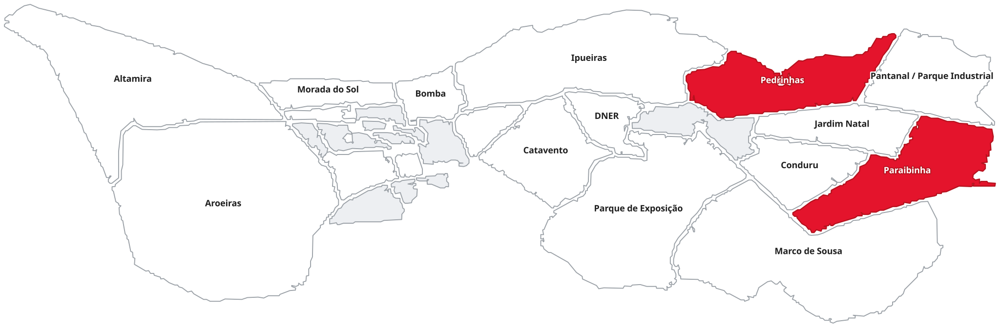

Vereador de Picos · Terceiro mandato · Partido dos Trabalhadores
Três vezes o mais votado de Picos. Este site existe para mostrar o que isso virou na rua — bairro por bairro, projeto por projeto, sem propaganda.
A origem
Wellington Dantas não chegou à política pela política. Veio da luta por moradia digna: presidiu a FAMCC — a federação que reúne as associações de moradores e os conselhos comunitários de Picos — e atuou no Movimento dos Pequenos Agricultores e na Frente Brasil Popular. Formado em Letras pela UFPI, filiado ao PT desde o começo.
Luta por casa para a população trabalhadora da região.
Associações de moradores, conselhos comunitários e pequenos agricultores.
Deixa a Secretaria Municipal de Governo e reassume o mandato.
Eleito presidente do diretório municipal do partido em Picos.
Mais votado da cidade pela terceira vez, 1º entre 17 eleitos.
A causa
Não é uma campanha de agosto. É a pauta que eu carrego o ano inteiro, junto com o Fórum de Mulheres de Picos, os conselhos comunitários e quem chegou primeiro nessa luta.
78,4% das vítimas nunca haviam registrado boletim de ocorrência contra o autor.
Boletim de Feminicídio · SSP-PI (GACE/SUCID) · publicado em 31/03/2026
Entregas
27 ações registradas entre 2025 e 2026 — 6 concluídas, 21 em andamento — em 4 bairros, além das que valem para a cidade toda. Cada linha traz o instrumento, a situação e a fonte.
Mostrando ·
Quadra de esportes do bairro Pedrinhas · concluída · Entrega · 22 ago 2026
Fonte: Instagram @wellingtondantaspicos
Zona central de Picos · realizada · Mobilização · 16 ago 2026
Fonte: Instagram e Prefeitura de Picos
Picos · em curso · Articulação · 7 ago 2026
Fonte: Instagram @wellingtondantaspicos
Picos · realizada · Apoio · 9 jul 2026
Fonte: Instagram @wellingtondantaspicos
Vale do Guaribas · realizada · Articulação · 26 jun 2026
Fonte: Instagram @wellingtondantaspicos
Picos · realizada · Mobilização · 26 jun 2026
Fonte: Instagram @wellingtondantaspicos
Picos · realizada · Mobilização · 19 jun 2026
Fonte: Instagram @wellingtondantaspicos
Bairro Morro da Macambira · protocolado · Requerimento · 18 jun 2026
Fonte: Boletim CMP nº 15/2026
Órgãos públicos e estabelecimentos comerciais de Picos · 1ª votação · Projeto de Lei · 18 jun 2026
Fonte: Boletins CMP nº 14 e 15/2026
BR-407 - trecho da antiga fábrica da Coca-Cola ao balão da Av. Doroteu Neres · protocolado · Requerimento · 11 jun 2026
Fonte: Boletim CMP nº 14/2026
Avenida Doroteu Neres - do Clube do Professor até a BR-316 · protocolado · Requerimento · 11 jun 2026
Fonte: Boletim CMP nº 14/2026
Balão da BR-316 no bairro Junco · protocolado · Requerimento · 11 jun 2026
Fonte: Boletim CMP nº 14/2026
Balão da BR-407 no acesso ao Clube do Professor · protocolado · Requerimento · 11 jun 2026
Fonte: Boletim CMP nº 14/2026
Corredor Paraibinha - Povoado Morrinhos - Povoado Valparaíso · protocolado · Requerimento · 3 abr 2025
Fonte: Boletins CMP nº 07 e 08/2025
Avenida Doroteu Neres (bairro Paraibinha) · protocolado · Requerimento · 3 abr 2025
Fonte: Boletins CMP nº 07 e 08/2025
Selo Empresa Amiga da Pessoa Autista · em votação · Projeto de Lei · 3 abr 2025
Fonte: Boletim CMP nº 07/2025
Título de cidadão picoense - José Libório Leal · em votação · Decreto Legislativo · 3 abr 2025
Fonte: Boletins CMP nº 07 08 e 09/2025
Praça do bairro Junco · protocolado · Requerimento · 27 mar 2025
Fonte: Boletim CMP nº 06/2025
Praça do bairro Pedrinhas · protocolado · Requerimento · 27 mar 2025
Fonte: Boletim CMP nº 06/2025
BR-316 próximo ao Povoado Valparaíso · protocolado · Requerimento · 27 mar 2025
Fonte: Boletim CMP nº 06/2025
Residencial Deputado Sá Urtiga · protocolado · Requerimento · 20 mar 2025
Fonte: Boletim CMP nº 05/2025
PI-376 · protocolado · Requerimento · 20 mar 2025
Fonte: Boletim CMP nº 05/2025
Rua Jardim da Infância e Rua Antonio Tibúrcio (Morro da AABB) · protocolado · Requerimento · 27 fev 2025
Fonte: Boletim CMP nº 03/2025
Áreas atingidas pelas chuvas de janeiro · protocolado · Requerimento · 20 fev 2025
Fonte: Boletim CMP nº 02/2025
Título de cidadã picoense - Anyara Ayres · em votação · Decreto Legislativo · 20 fev 2025
Fonte: Boletim CMP nº 02/2025
Rua Pedro Claro (bairro Junco) · protocolado · Requerimento · 13 fev 2025
Fonte: Boletim CMP nº 01/2025
Medalha Coêlho Rodrigues - Ten.-Cel. Antonio Aécio Silva Sousa (3º BEC) · em votação · Decreto Legislativo · 13 fev 2025
Fonte: Boletim CMP nº 01/2025
Nenhuma ação registrada com esse termo. O mandato tem 30 bairros para percorrer — se o seu não aparece aqui ainda, mande a demanda da sua rua.
Território
Clique no nome do bairro para ver, ali em cima, o que já foi protocolado, o que tramita e o que foi entregue. O número ao lado é quanto já existe registrado.
Povoados, conjuntos e recortes que também têm ação registrada:

Como funciona
O conselho comunitário do bairro levanta a demanda com os moradores.
O mandato protocola, cobra e acompanha na Câmara e na prefeitura.
No Orçamento Participativo, quem decide a prioridade é quem mora ali.
Entra neste site com bairro, data e situação — inclusive se atrasar.
Na Câmara
Ser o primeiro nas urnas não dá maioria no plenário. Cada projeto aprovado passa por convencimento, negociação e presença. A lista acima mostra o que eu apresento e como cada proposta anda — inclusive as que ainda não passaram.
Na mídia
Os endereços de cada matéria entram quando o gabinete confirmar a lista do clipping.
Participe
O gabinete recebe, protocola e devolve o andamento. Você acompanha por aqui.
O número do WhatsApp do gabinete e o grupo do bairro entram aqui assim que o gabinete definir o canal.